{{ hero.kicker }}
{{ hero.heading }}

LAB.STATUS░▒▓
{{ r.label }}{{ r.value }}
{{ statusNote }}
█INTAKE OPEN
01
WHAT WE DO
░░░░░░░░░░░░░░░░░░░░░░░░░░░░░░░░░░░░░░░░░░░░░░░░░░░░░░░░░░░░░░░░░░░░░░░░░░░░░░░░░░░░░░░░░░░░░░░░
{{ t.label }}
{{ t.value }}
{{ t.detail }}
{{ warden.kicker }}
{{ warden.caption }}
{{ warden.subtitle }}
{{ warden.heading }}
{{ p.text }}
{{ warden.footerLeft }}
{{ warden.footerRight }}
02
RESEARCH AREAS
░░░░░░░░░░░░░░░░░░░░░░░░░░░░░░░░░░░░░░░░░░░░░░░░░░░░░░░░░░░░░░░░░░░░░░░░░░░░░░░░░░░░░░░░░░░░░░░░
ALL ▸
03
PROJECTS
░░░░░░░░░░░░░░░░░░░░░░░░░░░░░░░░░░░░░░░░░░░░░░░░░░░░░░░░░░░░░░░░░░░░░░░░░░░░░░░░░░░░░░░░░░░░░░░░
ALL ▸
04
LATEST
░░░░░░░░░░░░░░░░░░░░░░░░░░░░░░░░░░░░░░░░░░░░░░░░░░░░░░░░░░░░░░░░░░░░░░░░░░░░░░░░░░░░░░░░░░░░░░░░
LOG ▸
QUEUE
{{ q.role }}{{ q.slots }}
WHISTLEBLOWER
{{ site.footerBlurb }}
▓▒░ END OF FILE ░▒▓
WHISTLEBLOWER LAB · MMXXVI